이 페이지는 쿠팡 파트너스 활동의 일환으로, 이에 따른 일정액의 수수료를 제공받습니다.
멍냥템 정리노트
@mungnyang.note · 반려동물 용품 (강아지·고양이 사료·모래·패드 등 소모품, 위생·산책·장난감)
번호는 Instagram 글에 적힌 번호와 같아요. 가격·재고는 쿠팡에서 다시 확인해 주세요.
🔎 사기 전 비교 유튜브 비교 영상에서 오셨다면 여기
디클펫 자동급식기 AT-310 vs AT-210 비교
- 고양이나 소형견이고, 설정은 버튼으로 간단하게 하고 싶다면 AT-310.
- 중형견이거나, 밖에서 앱으로 밥을 주고 싶다면 AT-210.
- 고르는 기준은 하루 사료량 216그램입니다.
🎬 영상 속 준비물 쇼츠에서 보고 오셨다면 여기
고양이 키우는 집 특징.zip
고양이 스크래쳐
쿠팡에서 고양이 스크래쳐 보기 (광고)방금 쌌는데 또 싸는 거 정상?
강아지 배변패드
쿠팡에서 강아지 배변패드 보기 (광고)방석 사 줬더니 옆 바닥에서 잠
강아지 방석
쿠팡에서 강아지 방석 보기 (광고)번호별 추천
🔥 요즘 특가 확인 시각 기준 · 할인은 바뀔 수 있어요
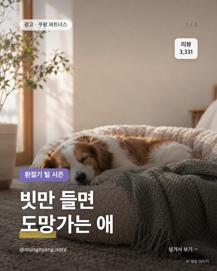
빗만 들면 도망가는 애
- 첫 페이지 10개 중
- 털 얘기 10건
- 아파할까·싫어할까 6건
- 강아지 6 · 고양이 4
코멧 펫 고무헤드 반려동물 슬리커 브러쉬
쿠팡에서 가격·후기 보기 (광고)원문 글 보기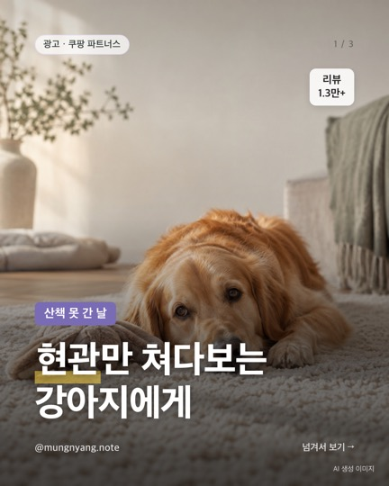
현관만 쳐다보는 강아지에게
- 첫 페이지 10개 중
- 세탁·세척 8건
- 한참·집중해서 6건
- 간식 숨기기 6건
딩동펫 노즈워크 담요 중형
쿠팡에서 가격·후기 보기 (광고)원문 글 보기전체 추천
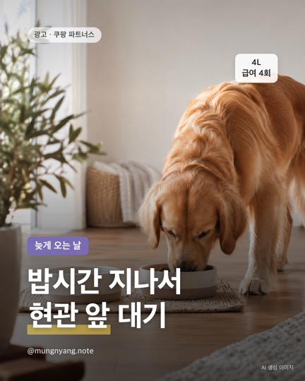
밥시간 지나서 현관 앞 대기
- 야근한 날 밥시간 지나서 현관 앞에 앉아 기다리는 애들, 다들 알지?ㅋㅋ
- 자동급식기는 용량·급여 횟수·식기 재질부터 보면 비교가 쉬움
- 디클펫 자동급식기 AT-310
- 상품 페이지 표기: 4L · 자동급여 4회 · 스테인리스 식기 1구
디클펫 반려동물 자동급식기 AT-310 4L
쿠팡에서 가격·후기 보기 (광고)원문 글 보기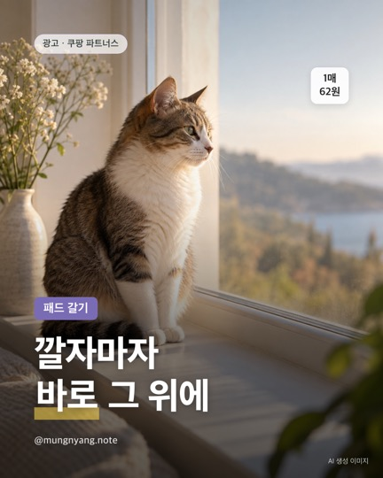
깔자마자 바로 그 위에
- 배변패드 새로 깔자마자 바로 그 위에 볼일 보는 강아지 있지?ㅋㅋ
- 패드는 하루에도 몇 장씩 나가서 1매당 가격부터 보는 집 많음
- 탐사 실속형 배변패드 100개입, 일반형
- 10/5 저녁 확인 기준 6,190원, 1매당 62원(바뀔 수 있어요)
탐사 실속형 배변패드 100개입
쿠팡에서 가격·후기 보기 (광고)원문 글 보기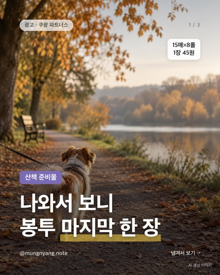
나와서 보니 봉투 마지막 한 장
- 첫 페이지 10개 중
- '두께·튼튼' 언급 10건
- '산책' 언급 8건
- 별점 4.8 · 리뷰 4,554개
코멧 펫 반려동물 배변봉투 리필형 초록색 15매 × 8롤
쿠팡에서 가격·후기 보기 (광고)원문 글 보기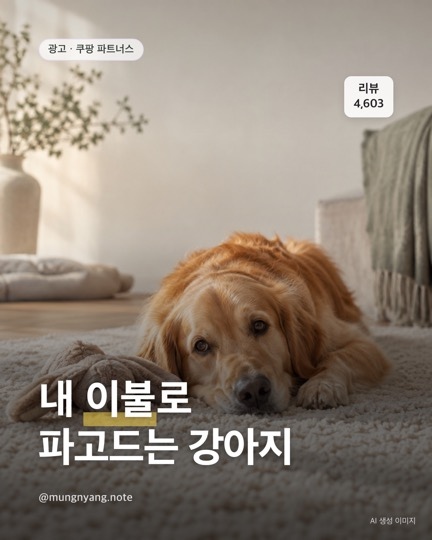
내 이불로 파고드는 강아지
- 날 추워지니까 강아지가 자꾸 내 이불로 파고드는 집 손✋
- 자기 자리 따뜻하면 덜 온다는 얘기 많더라ㅋㅋ
- 데코원 원스 극세사 강아지 방석 (솜포함)
- 25,900원(10/3 확인, 바뀔 수 있어요)
데코원 원스 극세사 강아지 방석 솜포함
쿠팡에서 가격·후기 보기 (광고)원문 글 보기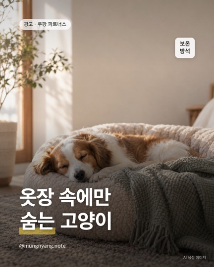
옷장 속에만 숨는 고양이
- 날 추워지니까 고양이가 옷장·이불 속에만 숨어 있는 집 손✋
- 숨을 데 하나 만들어 주면 거기로 간다는 집 많음
- 고양이 숨숨집 보온 방석
- 11,900원(10/3 확인, 바뀔 수 있어요) · 리뷰 173개
반려동물 고양이 숨숨집 보온 방석
쿠팡에서 가격·후기 보기 (광고)원문 글 보기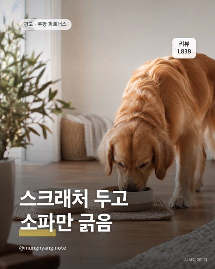
스크래처 두고 소파만 긁음
- 고양이가 스크래처 놔두고 소파만 긁는 거 국룰임?ㅋㅋ
- 소파 옆에 두면 그쪽으로 옮겨 간다는 얘기 있더라
- 스카펫 700 소파 스크래쳐 평판형
- 11,350원(10/3 확인, 바뀔 수 있어요)
스카펫 700 소파 스크래쳐 평판형
쿠팡에서 가격·후기 보기 (광고)원문 글 보기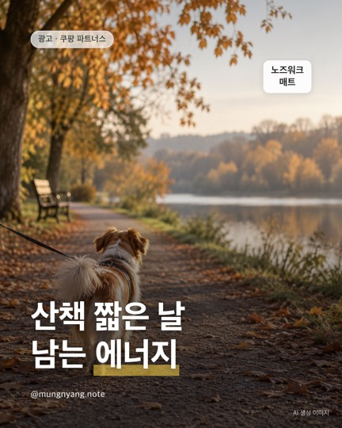
산책 짧은 날 남는 에너지
- 비 오거나 추워서 산책 짧게 끝난 날 에너지 남아도는 강아지 있지?ㅋㅋ
- 그럴 때 간식 숨겨서 노즈워크 시키는 집 많음
- 레토 플라워 당근밭 노즈워크 매트
- 16,830원(10/3 확인, 바뀔 수 있어요)
레토 강아지 플라워 당근밭 노즈워크 매트
쿠팡에서 가격·후기 보기 (광고)원문 글 보기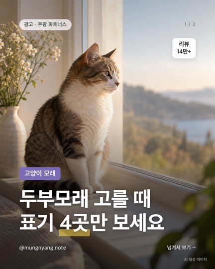
두부모래 고를 때 표기 4곳만 보세요
- 응고형인지
- 향 있음 / 무향
- 총 용량(L) · 100ml당 가격
- 묶음 수 = 보관 자리
탐사 고양이 두부모래 7L (약 2.8kg), 6개, 오리지널
쿠팡에서 가격·후기 보기 (광고)원문 글 보기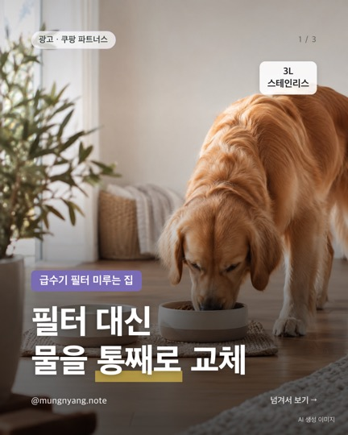
필터 대신 물을 통째로 교체
- '필터' 얘기 28건
- '새 물·깨끗한 물' 31건
- '오수·버리는 물' 15건
- '배터리·무선' 27건
푸푸펫츠 반려동물 스마트 자동 급수기, 그레이
쿠팡에서 가격·후기 보기 (광고)원문 글 보기
선 있는 거 vs 무선, 여기서 갈려요
- 유선 2.4L · 2만 원대 · 필터 2개 포함
- 무선 3L · 5만 원대 · 내장배터리
- 무선: 자리 자유, 대신 충전 관리
- 유선: 충전 걱정 없음, 자리는 콘센트 근처
푸푸펫츠 반려동물 스마트 자동 급수기 3L
쿠팡에서 가격·후기 보기 (광고)원문 글 보기
한 사이즈 차이, 1매 가격은 2배
- 얇다 27건
- 작다 12건
- 흡수 불만 8건
- → 소형견·자주 교체용
탐사 실속형 배변패드 50×40cm 100개입
쿠팡에서 가격·후기 보기 (광고)원문 글 보기
고양이 쇼파 스크래쳐
- 코멧 고양이 쇼파 스크래쳐, 오늘(9/28) 쿠팡 로켓배송 반려동물용품 할인 모음에 40% 할인 떠 있어요.
- · 타원형 1개: 9,490원 → 약 5,690원 (할인 모음)
- · 평판형 1개: 15,000원 → 약 8,860원 (상품 페이지)
- · 커브·타원·평판형, 모양마다 가격이 달라요
코멧 펫 고양이 쇼파 스크래쳐
쿠팡에서 가격·후기 보기 (광고)원문 글 보기
배변패드는 1매당 가격부터
- 매달 사는 소모품이라 단가 차이가 쌓여요
- 실속형 100매 · 1매당 60원대
- 향·기능성 패드 · 1매당 120원대 전후
- 사이즈(50×40 등)를 맞춰서 비교
탐사 실속형 배변패드 50x40 100개입
쿠팡에서 가격·후기 보기 (광고)원문 글 보기